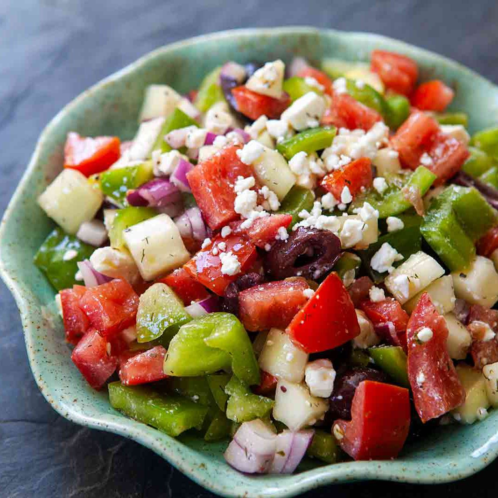

This large, healthy salad is beautiful, satisfying, and easy to throw together. Your whole family will love it, and it's so versatile you can change it up depending on your mood.
The flavors of pepperoncini, red wine vinegar, and red onion really stand out in this dish. Along with kalamata olives and feta cheese, the flavors are strong and redolent of the Mediterranean. This is a great choice for a summer day of when it's too hot to bother with the stove or oven.